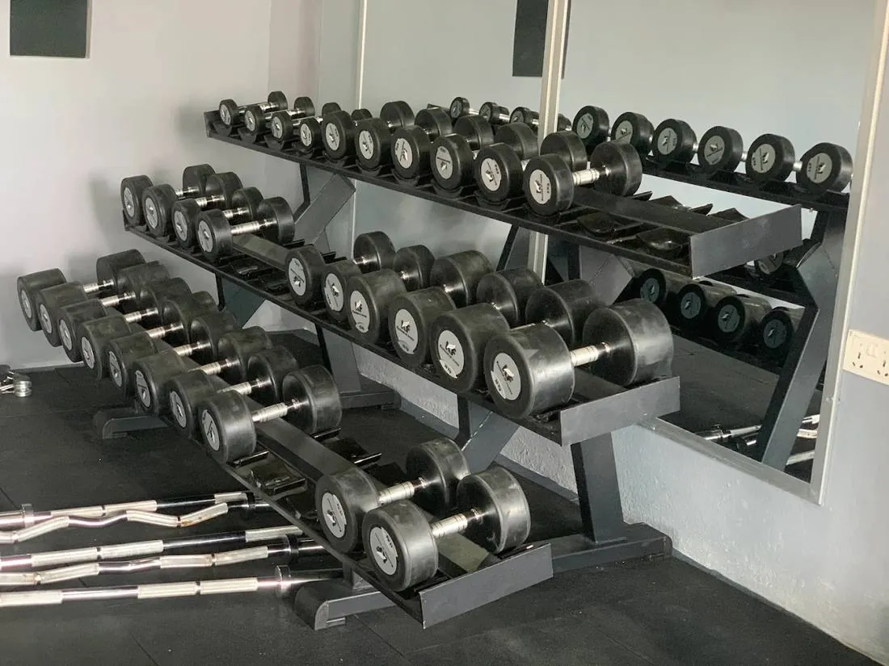

How to Become a Gym Trainer in Nepal (2026): Courses, Fees and Salary
Step-by-step guide to becoming a certified gym trainer in Nepal: which certification to choose, course fees, duration, requirements and real salary ranges.

To become a gym trainer in Nepal you need three things: a recognised certification, real hours on a gym floor, and a way to find clients. Most people can do it in 3 to 6 months. A good certification course in Nepal costs roughly NPR 15,000 to NPR 110,000, and you need to be 18 or older with SEE or equivalent education.
There is no widely required government licence for gym trainers in Nepal, so in practice anyone can call themselves a trainer. That is exactly why a respected certification matters. It is how gym owners and clients tell a trained coach from someone who just lifts.
This guide covers the options, what they cost, and what trainers actually earn.
Who can become a gym trainer?
You do not need a university degree. Typical entry requirements in Nepal are:
- Age: 18 or older
- Education: SEE/SLC or equivalent
- Fitness: you should train regularly yourself, but you do not need a competition physique
- Language: most international material is in English, so basic reading English helps a lot
The people who do best usually already train, enjoy explaining things, and are reliable. Clients stay with a trainer who shows up on time and remembers their injuries, not the one with the biggest arms.
Step 1: Choose your certification
There are three kinds of courses available to people in Nepal. They are not equal.
1. International certifications (most respected)
These come from large organisations whose certificates gyms recognise around the world:
- NASM-CPT (National Academy of Sports Medicine, Certified Personal Trainer)
- ACE-CPT (American Council on Exercise)
- ISSA (International Sports Sciences Association)
NASM and ACE certifications are accredited by the NCCA, an independent US accreditation body. That is a big reason employers abroad, including gyms in the Gulf and other countries where many Nepalis work, recognise them.
You can study for these online and sit the exam. Some academies in Nepal offer classroom support for them. For example, NAES Nepal says it is an official NASM education partner in Nepal and runs NASM-CPT plus specialist courses in sports nutrition and physique coaching.
Best for: anyone who wants to work abroad later, work in premium gyms, or coach online.
2. Local academy certificates
Several fitness academies in Kathmandu run their own personal trainer courses with classroom and gym-floor training. According to NAES, its own personal trainer course takes about 3 months (12 to 15 weeks), and fees across its programs range from NPR 15,000 to NPR 110,000 depending on the course. Always confirm current fees directly, because they change.
Best for: people who learn better in person and want practical coaching on technique from day one.
3. Short online “diplomas” (be careful)
Course listing sites sell “Gym Instructor Diploma” or “Personal Trainer Level 3” courses that take 1 to 8 hours and cost from about NPR 1,200 to NPR 5,000 on sale. They can be a cheap way to learn the basics, but gym owners rarely treat them as a real qualification. Do not pay for one thinking it replaces a proper certification.
Step 2: Compare the main options
| Option | Typical time | Typical cost | Recognition |
|---|---|---|---|
| International cert (NASM, ACE, ISSA) | 2 to 6 months of study | Higher; varies with exchange rate and package | Worldwide |
| Local academy course | About 3 months | About NPR 15,000 to 110,000 | Good inside Nepal; depends on the academy |
| Short online diploma | A few hours | About NPR 1,200 to 5,000 | Low |
Before you pay any academy, ask these five questions:
- Who issues the final certificate, the academy or an international body?
- How many hours of practical gym-floor training are included?
- Is the exam fee included, and what happens if you fail?
- Can you speak to two past students?
- Do they help with internships or job placement?
Step 3: Get floor experience
A certificate gets you an interview. Experience gets you the job.
- Intern at a gym for 1 to 3 months. Many gyms will let a certified beginner assist senior trainers, take attendance and coach basic technique.
- Learn to coach the big lifts: squat, bench press, deadlift, overhead press, rows and pull-ups. You should be able to spot and fix common mistakes quickly.
- Get First Aid and CPR training. Injuries and fainting happen in gyms. Major international certifications such as NASM and ACE require a valid CPR/AED certificate before you are certified.
- Track a few people’s progress (with permission): before and after photos, weights lifted, waist measurements. This becomes your first portfolio.

Real floor hours teach you to coach the main lifts with free weights. Photo: Apex Fitness Centre, Urlabari.Step 4: Specialise
General trainers compete on price. Specialists can charge more. Popular specialisations in Nepal:
- Fat loss and nutrition coaching: the biggest demand by far
- Women’s fitness: many women prefer a coach who understands their goals and is comfortable to work with
- Strength and powerlifting: a growing scene in Kathmandu, Pokhara and Dharan
- Bodybuilding and contest prep: smaller market, higher fees
- Corrective exercise: for back pain, knee pain and desk workers
How much do gym trainers earn in Nepal?
Salaries vary hugely by city, gym and skill. Figures published by NAES, a Nepali training academy, give a rough picture:
| Level | Monthly income (NPR) |
|---|---|
| Entry-level floor trainer | about 18,000 to 30,000 |
| Certified trainer, 1 to 3 years’ experience | about 40,000 to 80,000 |
| Independent or online coach with steady clients | 100,000 or more |
Treat these as rough guides from a course provider, not official statistics. In smaller cities, salaries are usually at the lower end, but living costs are lower too.
Most trainers grow their income through personal training clients on top of a salary, and later through online coaching, for example 3-month programs with diet plans and weekly check-ins.
Can you work abroad as a gym trainer?
Yes. Many Nepali trainers work in the Gulf countries, Malaysia and elsewhere. For this path:
- Choose an internationally recognised certification (NASM, ACE or ISSA).
- Keep First Aid and CPR certification valid.
- Build a simple portfolio of client results and short coaching videos.
- Apply only through licensed recruitment agencies and check job offers carefully.
Frequently asked questions
Do I need a certificate to work as a gym trainer in Nepal?
Gyms in Nepal do not generally need trainers to hold a government licence. But most good gyms ask for a recognised certification, and clients trust certified trainers more.
Which personal trainer certification is best in Nepal?
For long-term careers and work abroad, an NCCA-accredited certification such as NASM-CPT or ACE-CPT is the safest choice. For hands-on learning in Nepal, a practical local academy course is useful, ideally combined with an international certificate later.
How long does it take to become a gym trainer?
About 3 months for a typical course, plus 1 to 3 months of floor experience. Most people can start working within 3 to 6 months.
Can I become a trainer without a good physique?
Yes. Clients care about results and how you treat them. You should be fit and train consistently, but you do not need to look like a bodybuilder.
Is gym training a good career in Nepal?
It can be, especially in cities and for trainers who specialise or coach online. Starting salaries are modest, so plan to build your skills and client base over the first two to three years.
Next steps
- Decide your goal: Nepal only, or a career abroad later.
- Shortlist two or three courses and ask the five questions above.
- Start training consistently and learning the main lifts now.
- Ask a local gym about internships while you study.
Sources
- Programmes (NAES Nepal)
Fees and salaries were checked on 23 October 2026 from the sources linked above. They change, so always confirm with the academy directly.
General information, not medical advice. Ask a doctor if you have a health condition. Results vary from person to person.